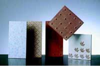
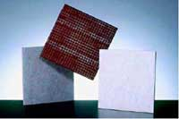
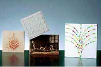
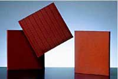
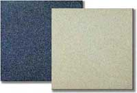

Керамическая плитка , ее марки и применение

Керамическая плитка является одним из наиболее распространенных отделочных материалов. Сфера ее применения очень широка: плитку можно использовать как для внутренней, так и для внешней отделки помещений, отделки бассейнов, укладки дорожек и пр. Ассортимент керамической плитки на современном рынке более чем разнообразен, а ее различные характеристики обусловлены применением различных методик в процессе производства. Для удобного обобщения специальных характеристик керамической плитки создана система ее классификации. Она позволяет разделить весь существующий ассортимент изделий на соответствующие категории. В этой статье приведены основные методы классификации керамической плитки.
Керамическая плитка различается:
По типу поверхности:
- глазурованная. Поверхность плитки покрыта
цветной глазурью, которая придает изделию важные технические (твердость,
прочность, водостойкость) и эстетические качества (блеск, цвет,
орнамент).
- неглазурованная. Поверхность плитки ничем не отличается от утеля, не имеет декоративного покрытия и рисунка.
По типу основы:
- на пористом утеле. Основа плитки содержит большое количество пор и характеризуется высокой степенью водопоглощения.
- на плотном утеле или «спеченной основе». Основа плитки очень прочная и практически не впитывает влагу.
По способу производства:
- прессованная. Плитка
изготавливается из измельченного в порошок исходного сырья, которое
формуется и прессуется особым способом при воздействии высокого
давления.
- экструдированная. Плитка изготавливается из тестообразной
массы исходного сырья, которая продавливания через специальные
отверстия экструдера – фильеры различной конфигурации. Метод
экструзии позволяет получать керамическую плитку сложной геометрической
формы.
По цвету массы:
- на красной или цветной массе;
- на белой массе;
- на бесцветной массе.
По форме и типоразмеру:
- квадратная
- прямоугольная
- сложной геометрической формы (шести или восьмигранная, прованская, мавританская).
Сегодня можно купить керамическую плитку абсолютно различного размера - от наибольшей плитки размером 60х60 см до наименьшей - "мозаичной". Толщина плитки может варьироваться в пределах от 20-25 мм до 2-3 мм.
По назначению различают плитку:
- для укладки пола внутри и снаружи здания;
- для внутренней и внешней облицовки стен (облицовочная).

Классификация керамической плитки основана на подразделении ее на несколько типов, которые обозначаются собственными характеристиками и квалифицируются не только по перечисленным выше параметрам, но и по технологии изготовления.
Общепринятые наименования керамической плитки (по технологии изготовления):
- майолика или метлахская плитка и плитка коттофорте;
- монокоттура;
- терралья и терралья на белой массе;
- котто;
- клинкер;
- керамический гранит (гресс порчелланато);
- керамический гранит на красной основе (гресс красный).
Майолика и плитка коттофорте

Майолика или метлахская плитка и плитка коттофорте – изделия двукратного обжига. Оба вида изготавливаются схожими способами и, поэтому объединены по одну группу. В процессе изготовления данных разновидностей плитки используют различные составы из глины, песка, карбоната и окислов железа. Производственный цикл состоит из двух фаз: обжига утеля и обжига глазури. Майолика расписывается вручную по сырой глазури, нанесенной на еще необожженное изделие поверх розового утеля.Майолика и коттофорте отличаются высоким показателем водопоглощения (до 10%) и сравнительно небольшой прочностью поверхности (толщина утеля - не более 5-7 мм). Однако благодаря небольшой массе, толщине, а также устойчивости к воздействию химических веществ и бытовых косметических средств, эти разновидности керамической плитки подходят для оформления стен в ванной комнате, душевой, кухне, а также в других помещениях с повышенной влажностью и частым использованием средств бытовой химии. Основными форматами майолики являются 15х25 см, 20х20 см и 20х30 см.
Монокоттура
Это эмалированная керамическая плитка одинарного обжига,
которая изготавливается методом формования. Монокоттура или одинарный
обжиг - один из современных способов изготовления широкого спектра
разновидностей керамической плитки.
Процесс изготовления
монокоттуры предусматривает только один цикл обжига: утель, состоящий из
смеси различных глин с содержанием небольшого количества окисей железа,
подвергают прессованию, затем на него наносят эмаль и обжигают при
температуре более 1200 °С. Готовые изделия имеют степень водопоглощения
от нулевой до 15%.
Керамическая плитка, изготовленная
методом однократного обжига, имеет прочный утель и износостойкую эмаль,
устойчива к воздействию синтетических моющих средств и агрессивной
химической среды. Монокоттура отлично подходит для внутренней и внешней
отделки вертикальных и горизонтальных поверхностей. Классические размеры
монокоттурной плитки следующие: 10х20 см, 20х20 см и до 40х40 см.
Терралья и терралья на белой основе
Терралья - это глазурованная плитка, которая изготавливается методом прессования и подвергается двойному обжигу. В основе терральи лежит дорогостоящее сырье высокого качества (глины, флюсы и пески, входящие в состав белой массы). Терралья имеет белый пористый утель (бисквит), на который наносится рисунок и покрывается стекловидной глазурью. Применяется терралья преимущественно для отделки горизонтальных поверхностей внутри помещения. Классический формат терральи - 15х15 см.
Котто
Котто - это неглазурованная керамическая плитка теплых
красноватых тонов на пористом утеле, которая изготавливается
методом экструзии. От классической пористой плитки на красной массе
керамическая плитка котто отличается тем, что в процессе изготовления
она чаще всего не глазуруется или глазуруется частично.
Благодаря
теплым оттенкам терракотовой гаммы плитка котто вносит в интерьер
обаяние старины. Она используется для облицовки пола внутри помещений.
Очень часто котто применяют в интерьерах музеев и церквей. Керамическая
плитка данной группы выпускается довольно крупных размеров: 25х25 см,
30х30 см, 20х40 см, 40х60 см.
Клинкер

Представляет собой неглазурованную или глазурованную разновидность монокоттурной керамической плитки с уплотненной основой. Он изготавливается методом экструзии. Основу клинкера составляют оксиды, флюсы и шамотные глины. Обжиг плитки при очень высокой температуре обуславливает ее отличные технические характеристики: механическую прочность, износостойкость и морозоустойчивость. Клинкер устойчив к воздействию агрессивных химических веществ, не поглощает влагу и очень легко чистится. Применяется клинкер для внешних работ, укладки садовых дорожек и пр. Наиболее распространенными являются следующие размеры клинкера: 12х24 см, 20х20 см и 30х30 см.Керамический гранит (гресс порчелланато)
Известен также под названием грес порчелланато. Изготавливается
керамический гранит из смеси глин двух различных видов с вкраплениями
частиц кварца, красящих пигментов натурального происхождения и шпата.
Смесь прессуется, а затем сушится и обжигается при очень высокой
температуре. Классический керамогранит покрывают особой стекловидной
массой, которая позволяет улучшить его водооталкивающие и механические
свойства в несколько раз. Керамический гранит обладает высокой степенью
устойчивости к истиранию и агрессивным средам. Используется керамогранит
для устройства и мощения напольных покрытий различной сложности.
Керамогранит
традиционных размеров 5х10 см и 10х10 см постепенно вытесняется плиткой
более крупного формата: 20х20 см, 30х30 см и 40х40 см.
Керамический гранит на красной основе (гресс красный)

Это высокопрочная спеченная плитка, которая обычно не глазируется. Керамогранит на красной основе устойчив к минусовым температурам окружающей среды и механическому истиранию, поэтому используется для укладки напольных покрытий в помещениях с высокой интенсивностью движения (на заводах, в цехах, магазинах). Для материала характерны особые физические характеристики, такие как высокая прочность, морозостойкость, прочность на разрыв и устойчивость к истиранию. Однако кераомогранит на красной основе «боится» резких перепадов температур. По этой причине он продается в форме "калиброванных пакетов" – тщательнейшим образом отобранными партиями разного размера, которые не следует смешивать в процессе эксплуатации.Классический формат керамогранита на красной основе - 7,5х15 см, однако достаточно распространен и формат 10х20 см. Типы керамической плитки по назначению
По назначению керамическая плитка разделяется на: универсальную, настенную, напольную, бордюрную, фасадную и плитку для бассейнов. Все основные технические характеристики каждого вида керамической плитки напрямую зависят от степени ее водопоглощения. Чем оно ниже, тем выше морозоустойчивость плитки. А чем выше пористость изделия, тем выше степень его водопоглощения.

Каждая упаковка керамической плитки маркируется производителем: специальные пиктограммы указывают уровень морозостойкости, прочности, износостойкости и предоставляют информацию о пористости, твердости и толщине плитки. При покупке керамической плитки всегда проверяйте соответствие основных показателей плитки ее назначению.Символы на упаковке АI или ВI свидетельствуют о том, что плитка устойчива к воздействию низких температур, а код АIII или BIII говорит о том, что данная марка плитки может применяться исключительно для внутренних работ.
По материалам сайта : http://www.pkrussia.ru/